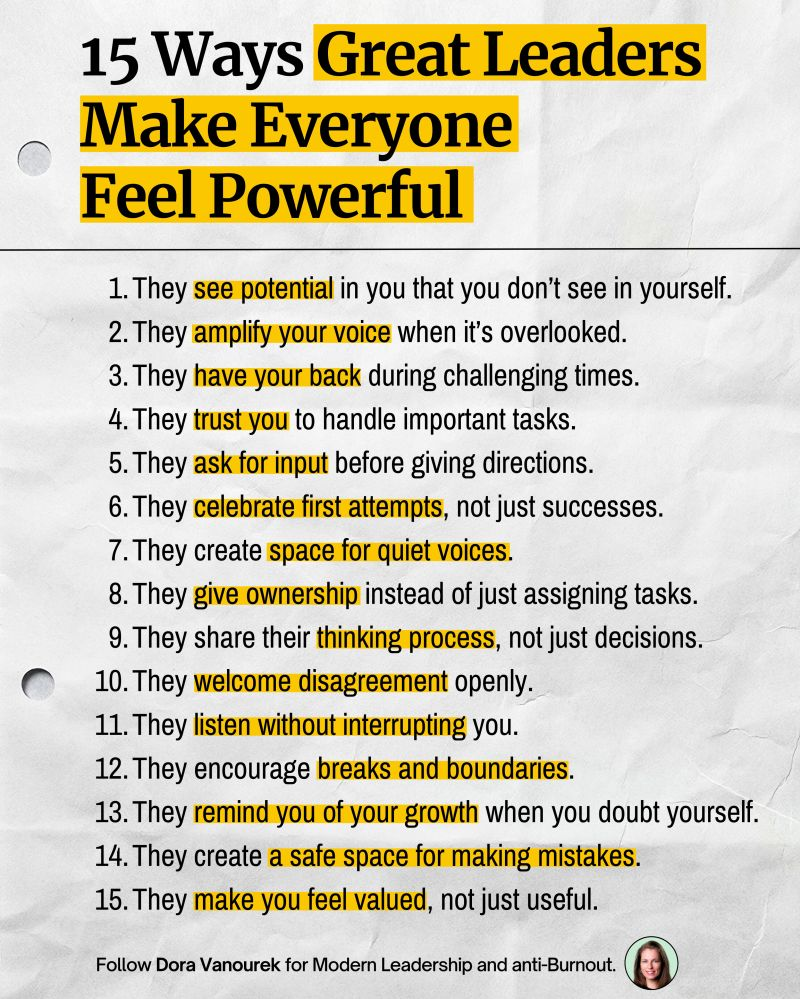
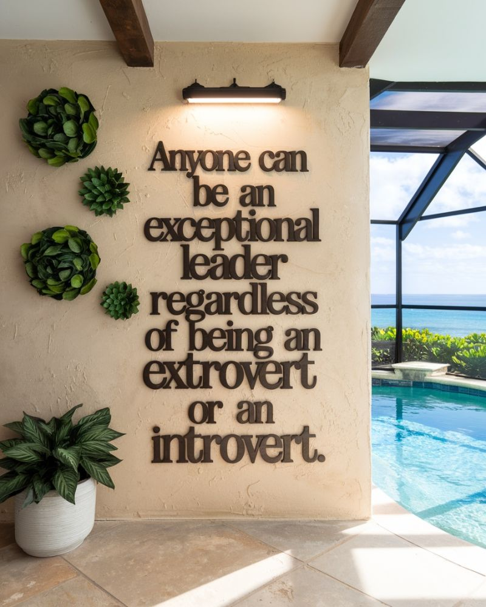
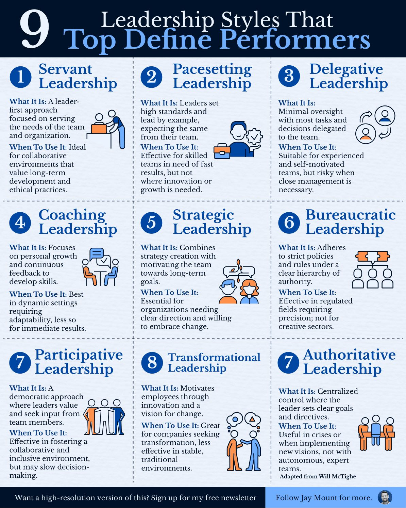

Guidelines for the new Team Leader – Geriatric Medicine Fellowship Program
Welcome to Your Leadership Role!
Thank you for stepping up to lead the Team. This is an exciting opportunity to guide your team, foster collaboration, and ensure a productive and enriching experience for all fellows. Below are some guidelines to help you get started and succeed in your role:
1. Leadership Role Overview
- Your role as team leader is flexible and can be rotated among fellows every 4-6 weeks, depending on schedules and preferences.
- You are not alone in this role! Senior team leaders and mentors are available to support you with any challenges or questions that arise.
- You will be added to the WhatsApp group for team leaders to stay connected and informed.
2. Getting Started with Your Team
Step 1: Create a WhatsApp Group for your Team
- Set up a dedicated WhatsApp group for your team to facilitate communication.
- Invite all current and incoming team members to the group.
- Join the Team Leader Whatsapp group. Here is the link for the leaders group: Click here.a>
- Please reach out to the other leaders with any of your questions.
Step 2: Welcome New Fellows
Send a warm welcome message to new team members. Here’s a sample email you can use:
Subject: Welcome to the Yellow Team – Geriatric Medicine Fellowship
Dear Team members,
Welcome aboard! We are thrilled to have you join the Yellow Team of the Telegeriatric Research Fellowship. As you embark on this exciting academic journey, please join our dedicated WhatsApp group: [Insert Link].
This group will serve as our main method of communication and will help us:
- Get to know one another and build professional relationships.
- Assign topics and presenters for meetings.
- Coordinate projects and tasks effectively.
If you have any questions or concerns, please don’t hesitate to reach out to me.
Wishing you a successful and enriching experience ahead!
Best regards,
[Your Name]
3. Team Management and Engagement
Step 3: Update Fellow Profiles
- Encourage all team members to update their profiles on the fellowship app: https://researchfellowship.glideapp.io/.
- Profiles should include phone numbers, photos, email addresses, and preferences to help everyone stay connected.
Step 4: Assign Roles and Tasks
- Identify a co-leader or "right-hand" fellow to support you. This person can step in when you’re unavailable and ensure tasks are completed.
- Assign presenters for team tasks, such as the Saturday Zoom meetings. Review prior meetings for inspiration and guidance.
Step 5: Form Subgroups
- The team will be divided into smaller subgroups of about ~ 5 fellows each. You can do that alphabetically for example, or according to the location, by country. The information can be located in the app under each fellow's profile.
- Subgroups will work together on tasks, present topics in small group Zoom meetings, and practice mock interviews.
- Use these subgroups to foster closer collaboration and provide opportunities for fellows to get to know one another. Also, to practice Presentation skills.
- Topics can be selected from prior meetings or from the file section in the app. Presentations can be short 5-10 minutes for example, followed by feedback and discussion.
4. Encouraging Participation and Learning
- Be creative in finding ways to engage your team. For example:
- Assign a fellow to moderate the Zoom meeting when it’s your team’s turn to present.
- Organize small group discussions or practice sessions to enhance learning.
- Encourage fellows to share resources, ideas, and feedback with one another.
5. Stay Flexible and Open to Feedback
- Leadership is a collaborative effort. Be open to suggestions from your team and adapt your approach as needed.
- Regularly check in with your team to ensure everyone feels supported and engaged.
- Remember that each fellow is a unique who can bring something new to the table.
- Also remember, there are several reasons that a fellow might not be able to respond to your email or messages. We understand some of the situations. Some are preparing for the Exam, some might be unavailable for one reason or another (e.g. Sudan war).
6. Key Contacts and Resources
Final Note
Your leadership will play a key role in shaping the Yellow Team’s experience. By fostering collaboration, communication, and engagement, you’ll help create a supportive and productive environment for everyone.
Thank you for taking on this responsibility, and best of luck in your leadership journey!
Warm regards,
Dr. Nadir Abdelrahman
TGRF Program Director
Some images:


